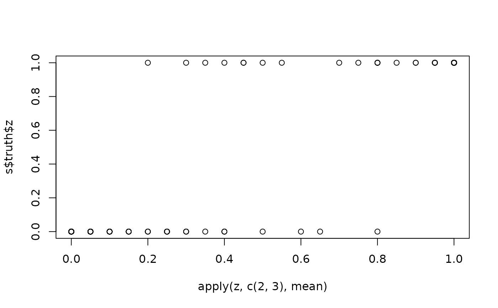

Posterior draws of the occupancy states of a multispecies model
Source:R/fp_occu_ms-outputs.R
fp_state_draws.RdDraws the occupancy state of every species at every site from an
fp_occu_ms() fit, one site x species matrix of 0 and 1 per posterior
draw, corrected for false positives. The draws can be passed to a joint
species distribution model of another package, such as 'gllvm' or 'Hmsc',
by multiple imputation: fit the model to each draw and average its
estimates over the draws. Experimental: the name, arguments and output
may change.
Value
An integer array of 0 and 1 with dimensions draw x site x species, named by the sites (the site column of the data) and the species of the model.
Details
For each posterior draw, the state of each species at each site is drawn
from its conditional posterior given the data of that species at that site
(as in fp_sites() and fp_richness()). A site where a verified
detection proves the species is present in every draw.
Limits. Two limits matter for a joint model fitted to the draws:
The strength of the associations between species is underestimated.
fp_occu_ms()draws the state of each species independently of the others. Where the data leave a state uncertain, the draws carry no co-occurrence, and the estimated residual associations shrink towards zero. The pattern of the associations is better kept than their size.Confusion between species is not corrected (see "Confusion between species" in
fp_occu()). When the classifier often marks one species when another calls, the draws inherit the bias offp_occu_ms(), and the joint model may read the confusion as a positive association.
The joint model treats each draw as data, so the uncertainty of the states enters only through the spread of its estimates among draws. Average quantities that do not depend on the rotation of the latent factors, such as the residual covariance or correlation between species, not the loadings themselves.
With 'gllvm', averaging the residual covariance over the draws:
z <- fp_state_draws(fit, ndraws = 20)
X <- data.frame(x = fit$data$sites$x)
ll <- lapply(seq_len(dim(z)[1]), function(k) {
m <- gllvm::gllvm(z[k, , ], X = X, formula = ~ x,
family = binomial(link = "logit"), num.lv = 2)
lam <- m$params$theta %*% diag(m$params$sigma.lv, 2)
lam %*% t(lam)
})
Reduce(`+`, ll) / length(ll)With 'Hmsc', the residual covariance Omega of a site-level random effect:
units <- factor(seq_len(dim(z)[2]))
omega <- lapply(seq_len(dim(z)[1]), function(k) {
m <- Hmsc::Hmsc(Y = z[k, , ], XData = X, XFormula = ~ x, distr = "probit",
studyDesign = data.frame(site = units),
ranLevels = list(site = Hmsc::HmscRandomLevel(units = units)))
m <- Hmsc::sampleMcmc(m, samples = 1000, thin = 5, transient = 2500,
nChains = 2)
Hmsc::getPostEstimate(m, "Omega")$mean
})
Reduce(`+`, omega) / length(omega)A species present at every site, or at none, in a draw cannot enter a binary joint model; drop it from that draw.
Examples
# \donttest{
s <- simulate_fp_ms(nspecies = 5, nsite = 60, seed = 1)
m <- fp_occu_ms(s$data, occ = ~ x, det = ~ bio, random_recorder = FALSE,
chains = 2, threads_per_chain = 1)
#> Parametrization (5 species at 60 sites): centered = FALSE, centered_occ = FALSE; see ?fp_occu_ms.
#> Running MCMC with 2 parallel chains, with 1 thread(s) per chain...
#>
#> Chain 1 finished in 106.7 seconds.
#> Chain 2 finished in 109.5 seconds.
#>
#> Both chains finished successfully.
#> Mean chain execution time: 108.1 seconds.
#> Total execution time: 109.7 seconds.
#>
z <- fp_state_draws(m, ndraws = 20, seed = 1)
dim(z)
#> [1] 20 60 5
# share of draws in which each species is present, against the truth
plot(apply(z, c(2, 3), mean), s$truth$z)

# }